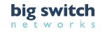
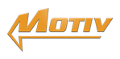
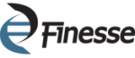
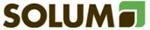
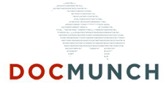
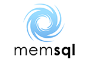
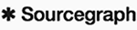

MS&E 273 teaches the process of entrepreneurship. Some alumni use knowledge gained in this course to launch high-tech ventures or join startups. Others have gone on to work in venture capital, consulting, and more established technology companies.
|
mOasis
Innovative crop science. Championing economic and environmental sustainability in agriculture to ensure the continued competitiveness of American farmers. |
|
|
Aperia
A revolutionary automatic tire inflation system for trucks & trailers that bolts-on in minutes. Increased fuel efficiency & extended tire life |
|
|  |
Big Switch Networks
Big Switch Networks is delivering on the promise of Open Software- Defined Networking (SDN) providing customers the widest range of options and the most value out of their network. They deliver a highly scalable Open SDNTM platform, Network Virtualization, and applications for customers whose business is impacted by limitations of both their virtual and physical infrastructure. Co-founder Kyle Forster is an MS&E 273 Alum. |
|  |
Motiv Power Systems
Motiv is an engineering design firm with expertise in medium level (1kW-1MW) power systems and control. Their mission is to become a leader in power system design. We develop IP critical to the cleantech industry and license it to clients in the EV, renewable generation, and energy storage industries. CEO and Co-founder Jim Castelaz is an MS&E 273 Alum. |
|  |
Finesse Solutions
Finesse was founded to bring digital, plug-and-play solutions to life science customers, so as to improve the management of complex bio-process applications. The initial focus is on improving sensor, hardware, and software solutions for process control in the biotechnology and pharmaceutical industries. To date, their products include next generation single-use optical sensors, digitally-enabled hardware for plug-and-play process control, and easy-to-use software whose analytics scale from research into production. CEO Barbara Paldus is an MS&E 273 Alum. |
|
Skybox Imaging
Skybox Imaging is revolutionizing the use of satellite imagery and derived information products by developing the world's highest performance constellation of imaging microsatellites to deliver high resolution imagery of any spot on earth multiple times per day. Co-founders Dan Berkenstock and Julian Mann are MS&E 273 Alumni. Skybox was acquired by Google for $500M |
|
|  |
Solum
Solum, Inc. is revolutionizing precision agriculture, enabling growers to increase yield and reduce cost by applying crop nutrients in the right amount, at the right place, and at the right time through high accuracy soil measurements based upon the field moist method. Their proprietary hardware and software systems provide high-resolution soil nutrient information without adding cost to existing soil measurement practices. Co-founders Mike Preiner, Nick Koshnik and Justin White are MS&E 273 Alumni. |
|
WiFiSLAM
WiFiSLAM is at the forefront of enabling the next generation of location-based applications with microlocation ability. Their solution is accurate, efficient, and simple to use. The founding team is a mix of Stanford graduate students and ex-Googlers. Co-founders Joseph Huang and Joey Swicker are MS&E 273 Alumni. In March 2013 Apple acquired WiFiSLAM for $20M. |
|
|  |
Docmunch
Docmunch helps companies transform unstructured sources - such as Excel files, PDFs, websites, and emails - into a custom structured data feed. Docmunch was selected as 1 of 10 companies for StartX's Spring 2013 class. Co-founder Michael Feng is an MS&E 273 Alumnus. |
|  |
MemSQL
MMemSQL is a next generation database that removes the most common bottleneck most applications hit today: disk. By offering a familiar relational interface to an in-memory data tier, MemSQL empowers developers with the technology web-scale companies use to cope with massive traffic and growth. MemSQL was funded as part of the Y-Combinator Winter 2011 class. Co-founder Eric Frenkiel is an MS&E 273 Alumnus. |
|  |
Sourcegraph
Sourcegraph is semantic code search for open source. The Sourcegraph search engine allows users to quickly find code and relevant examples of where it's used, thus reducing coding time. Co-founder Beyang Liu is an MS&E 273 Alumnus. |